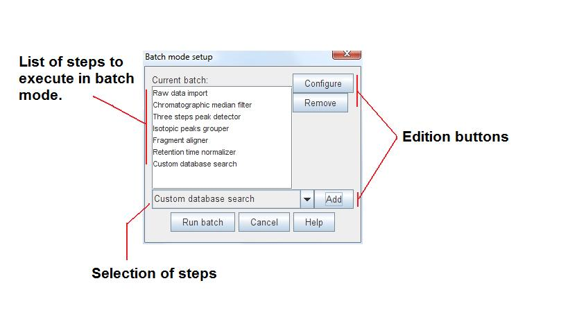

MZmine 2 has the option to run multiple data processing methods in batch mode. The following figure shows the "Batch mode setup" dialog, where the user can setup the individual batch steps. At the moment of adding a new step, the corresponding parameter setup dialog appears. It is also possible to change the steps or the parameters of each step with "Configure" and "Remove" buttons.

The first step of the batch is performed on those raw data files/peak lists selected by the user at the time of starting the batch. The following steps of the batch are performed on the results obtained by the previous step. For example, if the first step of the batch is Chromatogram builder, it will produce peak lists as a result. The following step of the batch may be Peak list deconvolution, and it will be performed on the peak lists obtained from the first step.